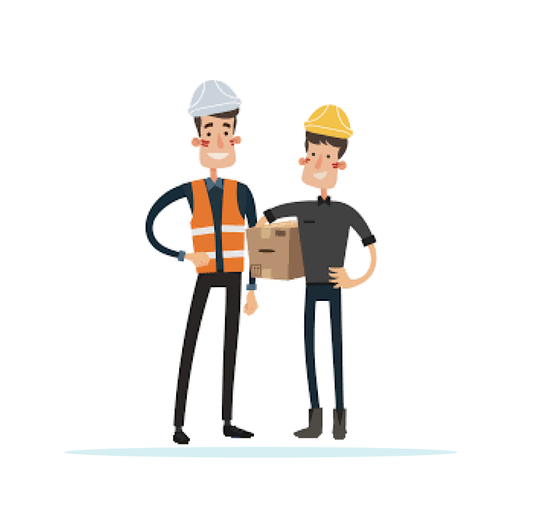
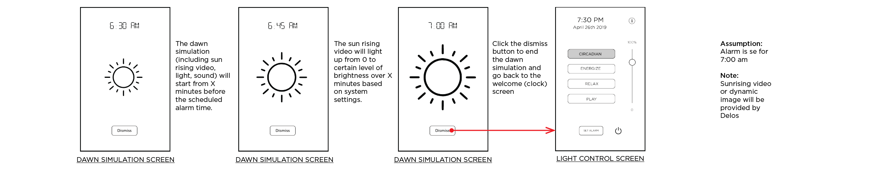
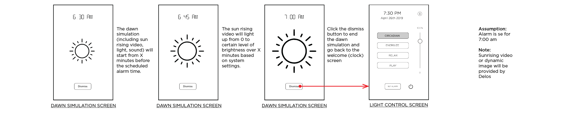

The products used in hotel is different from homes. The people who install them, use them, and mantain them are totally different. After talked with hotel staff and Stay Well team, I summarized users of Moodbox into the following 3 types:

Hotel Guest
45% of the visitors came to resort for pleasure. Their average stay is 3.4 nights to 4.4 days. More than 50% of the visitors travel long distance before they arrived.

Room service
Cleaning staffs need to rest the device every time after a guest checks out.

Commissioning team
Currently, the commissioning work is majorly done by Stay Well team. Potentially, in the future, when the business gets expand, a 3rd-party commissioning team will conduct the job.

 
